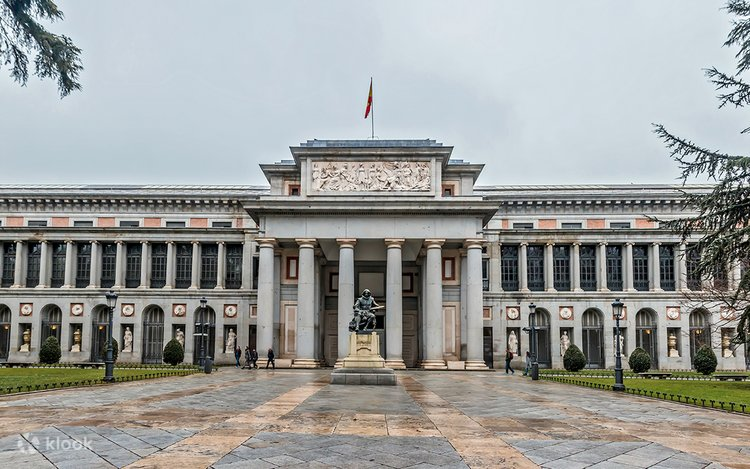
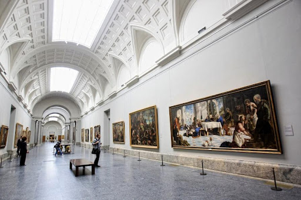
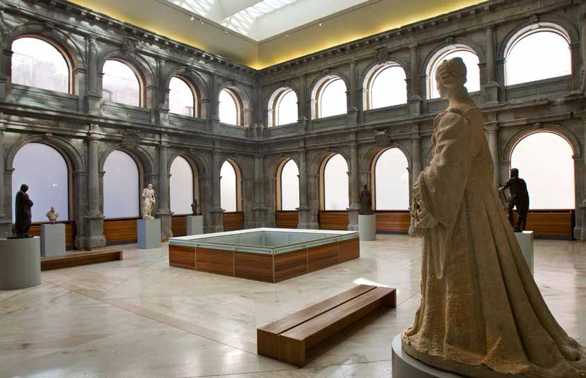
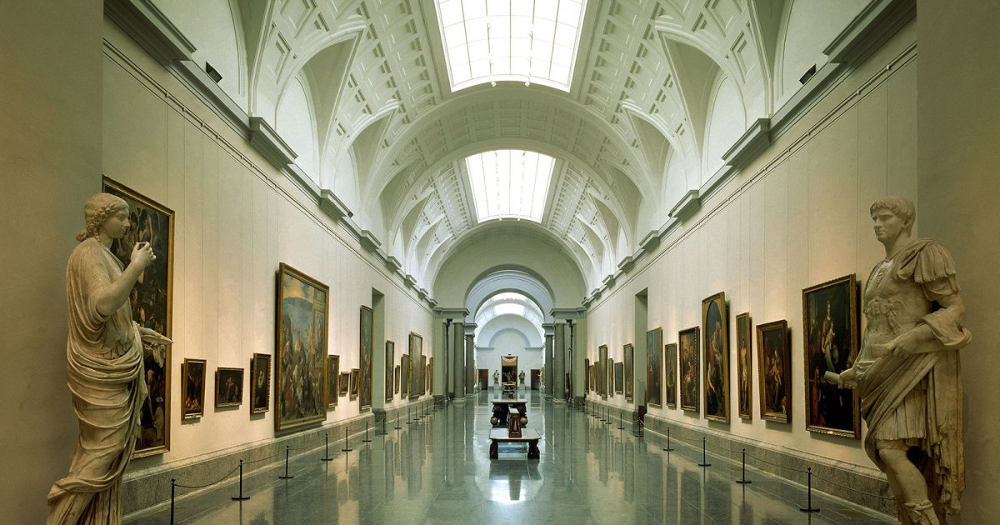
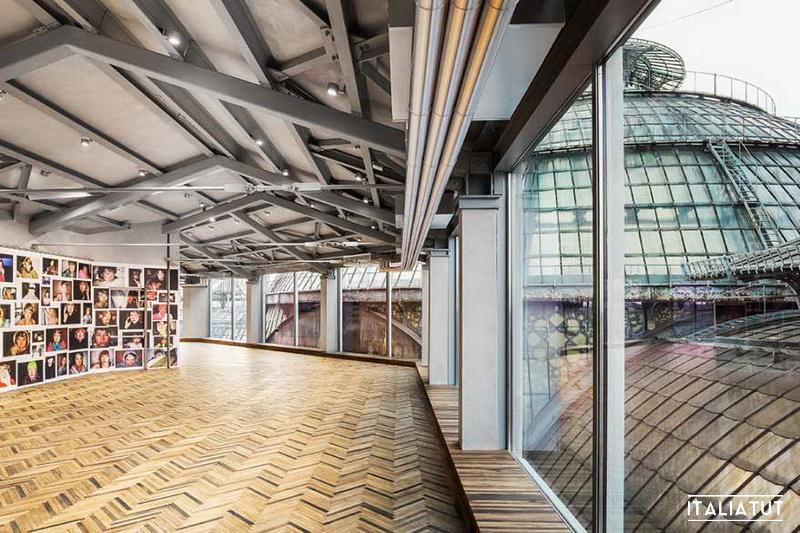
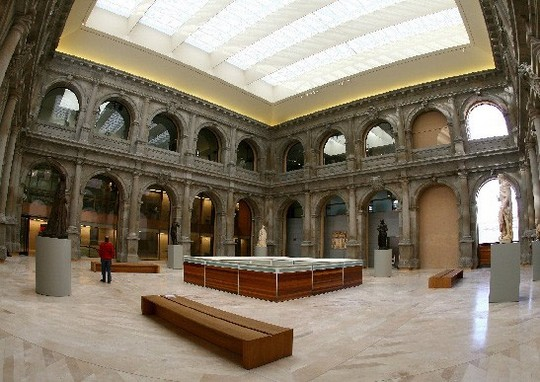

Prado muzeyi: Ispaniya san’ati va Yevropa rassomchiligining durdonasi

Prado muzeyi (ispancha Museo Nacional del Prado) — dunyodagi eng mashhur va eng nufuzli san’at muzeylaridan biri bo‘lib, Ispaniyaning poytaxti Madrid shahrida joylashgan. Ushbu muzey asosan Yevropa tasviriy san’ati, ayniqsa ispan rassomchiligining eng yuksak namunalarini o‘zida jamlagani bilan tanilgan. Prado muzeyi nafaqat Ispaniya madaniyatining ramzi, balki butun jahon san’atining bebaho xazinasi hisoblanadi. Har yili millionlab sayyohlar Prado muzeyiga tashrif buyurib, asrlar davomida yaratilgan san’at durdonalarini tomosha qiladilar. Muzey o‘zining boy kolleksiyasi, tarixiy ahamiyati va ilmiy salohiyati bilan Luvr, Ermitaj va Britaniya muzeyi bilan bir qatorda tilga olinadi.
Prado muzeyining tashkil topishi
Prado muzeyining tarixi XVIII asr oxiriga borib taqaladi. Dastlab muzey binosi 1785-yilda Ispaniya qiroli Karl III buyrug‘i bilan qurilgan. Bino dastlab Tabiiy fanlar muzeyi sifatida rejalashtirilgan bo‘lsa-da, keyinchalik san’at muzeyiga aylantirilgan. Prado muzeyi rasmiy ravishda 1819-yilda qirolicha Mariya Izabel de Bragansa tashabbusi bilan ochilgan. Dastlab muzeyda 300 ga yaqin rasm bo‘lgan bo‘lsa, vaqt o‘tishi bilan Ispaniya qirollik kolleksiyasiga mansub minglab asarlar Prado fondiga qo‘shilgan. Qirollar san’atni davlat qudratining ramzi deb bilganlari sababli, Prado kolleksiyasi asosan qirollik saroylari uchun yaratilgan noyob asarlardan iborat bo‘lib, ularning aksariyati yuqori badiiy saviyaga ega.
Muzey binosi va me’morchiligi

Prado muzeyining asosiy binosi neoklassik uslubda qurilgan bo‘lib, mashhur me’mor Xuan de Villanueva tomonidan loyihalashtirilgan. Bino o‘zining soddaligi, muvozanati va mutanosibligi bilan ajralib turadi. Keyingi yillarda muzey kengaytirilib, unga zamonaviy qanotlar qo‘shilgan. Shunga qaramay, tarixiy bino o‘zining asl qiyofasini saqlab qolgan. Prado binosi Madridning mashhur San’at oltin uchburchagi (Prado, Reina Sofía va Thyssen-Bornemisza muzeylari) hududida joylashgan.
Prado muzeyi kolleksiyasi
Prado muzeyida 8 mingdan ortiq rasm, minglab haykallar, chizmalar va amaliy san’at buyumlari mavjud. Biroq ularning faqat bir qismi doimiy ekspozitsiyada namoyish etiladi. Kolleksiya asosan XII asrdan XIX asrgacha bo‘lgan Yevropa san’atini qamrab oladi. Muzey kolleksiyasining asosiy qismini quyidagi maktablar tashkil etadi:
- Ispan rassomlik maktabi
- Italiya rassomlik maktabi
- Flamand va Gollandiya san’ati
- Fransuz va nemis san’ati
Prado muzeyi, ayniqsa, ispan san’ati bo‘yicha dunyodagi eng boy to‘plamga ega muzey hisoblanadi.
Ispan rassomchiligi: Prado yuragi
Prado muzeyining eng muhim va eng mashhur qismi — bu ispan rassomchiligidir. Bu yerda Ispaniya san’atining deyarli barcha buyuk namoyandalari asarlarini uchratish mumkin.
Prado muzeyining eng muhim va eng mashhur qismi — bu ispan rassomchiligidir. Bu yerda Ispaniya san’atining deyarli barcha buyuk namoyandalari asarlarini uchratish mumkin.
Prado muzeyida Goyaning eng yirik kolleksiyasi saqlanadi. Uning “3-may, 1808-yil”, “Qora rasmlar”, “Qirollik oilasi portreti” kabi asarlari inson ruhiyati, urush dahshati va jamiyat muammolarini chuqur ochib beradi.
El Greko diniy mavzudagi cho‘zilgan shakllar va dramatik ranglar bilan mashhur bo‘lsa, Murilyo o‘zining yumshoq, iliq diniy kompozitsiyalari bilan tanilgan. Ularning asarlari Prado kolleksiyasining muhim qismini tashkil etadi.
Italiya va Flamand san’ati

Prado muzeyida ispan san’ati bilan bir qatorda Italiya va Flamand rassomchiligi ham keng namoyish etilgan. Italiya bo‘limida Titsian, Rafael, Tintoretto, Veroneze kabi Uyg‘onish davri ustalarining asarlari mavjud. Ayniqsa, Titsianning portretlari va mifologik sahnalari yuqori baholanadi. Flamand san’atida esa Piter Paul Rubens, Ieronim Bosch (Bosx) va Van Deyk asarlari muhim o‘rin tutadi. Boschning “Yer yuzidagi lazzatlar bog‘i” triptixi Prado muzeyining eng mashhur va sirli asarlaridan biri hisoblanadi.
Haykaltaroshlik va boshqa kolleksiyalar
Prado muzeyi asosan rassomlik muzeyi bo‘lsa-da, unda haykaltaroshlik, chizmalar va dekorativ san’at namunalarini ham uchratish mumkin. Haykallar asosan antik va neoklassik davrlarga mansub. Chizmalar va grafik asarlar fondi juda boy bo‘lib, ular ilmiy tadqiqotlar uchun katta ahamiyatga ega. Bu bo‘limda rassomlarning dastlabki eskizlari va ijodiy jarayonlari bilan tanishish mumkin.
Prado muzeyining madaniy va ilmiy ahamiyati
Prado muzeyi faqat ko‘rgazma joyi emas, balki yirik ilmiy-tadqiqot va ta’lim markazi hamdir. Muzeyda san’atshunoslar faoliyat yuritadi, ilmiy konferensiyalar, ma’ruzalar va vaqtinchalik ko‘rgazmalar tashkil etiladi. Shuningdek, muzey restavratsiya ishlari bilan shug‘ullanib, san’at asarlarini kelajak avlodlar uchun saqlab qolishga katta e’tibor qaratadi.
Zamonaviy Prado va raqamli imkoniyatlar
Bugungi kunda Prado muzeyi zamonaviy texnologiyalardan faol foydalanmoqda. Ko‘plab asarlar onlayn tarzda namoyish etilmoqda, virtual ekskursiyalar yaratilgan. Bu esa muzeyni butun dunyo uchun yanada ochiq qiladi.
Prado muzeyi — bu Ispaniya tarixining, san’atining va milliy o‘zligining yorqin timsolidir. Uning zallarida Yevropa san’atining eng muhim bosqichlari, inson ruhiyati va jamiyat taraqqiyoti aks etgan. Pradoga tashrif buyurish — bu nafaqat san’atni tomosha qilish, balki tarix, falsafa va madaniyat bilan yuzma-yuz uchrashish demakdir. Shu sababli Prado muzeyi dunyoning eng buyuk san’at muzeylari qatorida munosib o‘rin egallaydi.